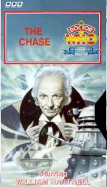
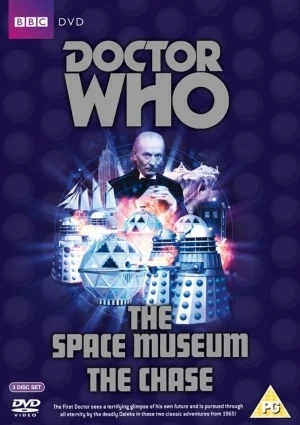
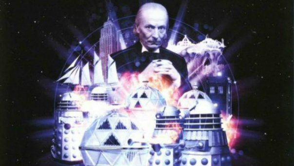

Эра Первого Доктора (2 сезон)
<<< НАЗАД ||| 8. Погоня ||| ДАЛЬШЕ >>>
Субтитры: Русские и Английские |  |
|---|
22 мая - 26 июня 1965
6 эпизодов по 25 мин.
| 1. Палачи 2. Смерть времени 3. Полёт через вечность 4. Путешествие в террор 5. Смерть Доктора Кто 6. Решающая планета | Сохранились - 16mm t/r |
|---|
 |  |
«Погоня» — это масштабная гонка сквозь время и пространство: далеки на собственной машине времени преследуют ТАРДИС по разным эпохам и планетам. Герои оказываются в Нью‑Йорке, на «Марии Целесте», в аттракционе с Дракулой и Франкенштейном — реальность смешивается с иллюзией. Кульминация разворачивается на Механусе, где сталкиваются далеки и механоиды, а Доктор разоблачает робота‑двойника. Серия стала зрелищным эталоном погони и эффектно показала, как угроза может быть не только физической, но и обманчиво‑иллюзорной.
 VHS - сентябрь 1993 |   DVD+Boxset - 1 марта 2010 |  Blu-ray - 5 декабря 2022 * Версия в нашей группе |
|---|


